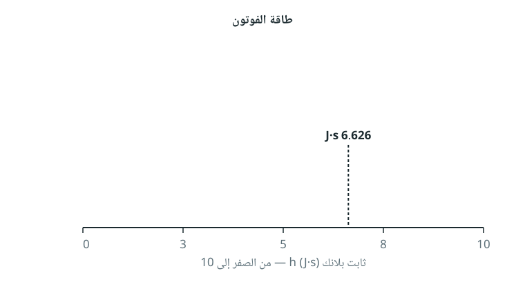

طاقة الفوتون
Photon energy
طاقة الفوتون تتناسب طردياً مع تردد الإشعاع وعكسياً مع طوله الموجي عبر ثابت بلانك: E = h·f = h·c/λ، فالفوتون البنفسجي يحمل طاقة أكبر من الأحمر.
الفوتون هو الكمّ الأساسي للطاقة الكهرومغناطيسية، وطاقته تُعطى بـE = h·f = h·c/λ، حيث h ثابت بلانك وf التردد وλ الطول الموجي وc سرعة الضوء. وبما أن h وc ثابتان، فإن الطاقة تتناسب عكسياً مع الطول الموجي. وتُعبَّر الطاقة عادة بالإلكترون-فولت: E(eV) = 1240/λ(nm). مثال: ضوء أخضر طوله الموجي 550 nm له طاقة 1240/550 = 2.25 eV، وضوء أحمر عند 700 nm له 1.77 eV، وفوتون أشعة سينية عند 0.1 nm له 12 400 eV = 12.4 keV. وهذا الفرق هو ما يحدد إن كان الفوتون قادراً على تفكيك رابطة كيميائية أو تأيين ذرة.
كيف تعمل الظاهرة؟
الضوء لا يتبادل الطاقة مع المادة بصورة متصلة، بل في حزم منفصلة مقدارها h·f. وهذا ما فرضه بلانك لحل مشكلة إشعاع الجسم الأسود، ثم أكّده أينشتاين في تفسير الأثر الكهروضوئي: إلكترون في معدن لا ينطلق إلا إذا تجاوزت طاقة الفوتون الساقط دالة الشغل، مهما كانت شدة الضوء. فلو كانت الطاقة تُعطى متصلة، لكان ضوء أحمر ضعيف كافياً بعد وقت طويل لتراكم طاقة كافية — لكن هذا لا يحدث. والسبب أن الفوتون يُسلّم طاقته كاملة لإلكترون واحد في تصادم واحد، ولا تُقسَّم. ولهذا فإن طاقة الفوتون تحدد نوع التفاعل الممكن، وشدته تحدد عدده.
العلاقة بالأرقام
E = h·f = h·c/λ. وبالإلكترون-فولت: E(eV) = 1239.841 984/λ(nm). والعلاقة بالزخم: p = E/c = h/λ. مثال عددي: λ = 550 nm → E = 1239.842/550 = 2.254 eV = 3.6117×10⁻¹⁹ J. وλ = 700 nm → 1.771 eV. وλ = 0.1 nm → 12 398 eV = 12.4 keV. وطاقة مول الفوتونات: E_molar = N_A·h·c/λ = 6.022×10²³ × 3.6117×10⁻¹⁹ = 217.5 kJ/mol.
مفاهيم متقاربة
يُفرَّق بين طاقة الفوتون وطاقته الحركية: الفوتون لا كتلة سكون له، وطاقته كلها من تردده، ولا تُحسب بـ½mv². ويُفرَّق بين الطول الموجي في الفراغ والطول الموجي في الوسط: في الماء ينقص الطول الموجي بمعامل معامل الانكسار، لكن التردد والطاقة لا يتغيران. ويُفرَّق بين طاقة الفوتون وطاقة الفونون: الفونون كمّ اهتزاز شبكي في المادة الصلبة، وطاقته أقل بكثير (meV) من طاقة الفوتون الضوئي (eV). وأخيراً يُفرَّق بين الفوتون والفوتون الافتراضي في الديناميكا الكهرومغناطيسية الكمومية، وهو مفهوم حسابي لا جسيم حر.
حدود التطبيق
العلاقة E = h·f صالحة لكل الفوتونات، لكن وصفها كجسيم منفصل يفقد معناه في الأطوال الموجية الطويلة جداً (موجات راديوية) حيث يسلك الضوء سلوكاً موجياً جماعياً. ولا تصف العلاقة شدة الإشعاع ولا عدد الفوتونات، فتحتاج معادلة ثانية للشدة. وفي الأنظمة ذات الفوتونات المتشابكة أو الليزر عالي الشدة تظهر ظواهر غير خطية لا تصفها علاقة الفوتون الواحد. وأخيراً في الأوساط المادية الكثيفة يتغير وصف الانتشار بسبب الاستقطاب والامتصاص، ولا يكفي حساب طاقة الفوتون وحده لتوقع ما يحدث.

| الكمية | القيمة | المصدر |
|---|---|---|
| ثابت بلانك h | 6.626 070 15×10⁻³⁴ J·s | [1] |
| طاقة فوتون طوله الموجي 550 nm | 2.254 eV | [3] |
المصادر
- 1 CODATA Value: Planck constant — NIST — CODATA 2022 recommended values (2024). physics.nist.gov/cgi-bin/cuu/Value?h · اطُّلع عليه 2026-11-21
- 2 CODATA Value: speed of light in vacuum — NIST — CODATA 2022 recommended values (2024). physics.nist.gov/cgi-bin/cuu/Value?c · اطُّلع عليه 2026-11-21
- 3 CODATA Value: elementary charge — NIST — CODATA 2022 recommended values (2024). physics.nist.gov/cgi-bin/cuu/Value?e · اطُّلع عليه 2026-11-21
استشهد بهذا المصطلح
الصيغتان مبنيتان من بيانات الصفحة نفسها: العنوان والتاريخ ورابط النسخة المنشورة.
طاقة الفوتون — Photon energy. (2026). ديوان المعرفة — انفراد. https://infiradev.com/diwan/terms/term-photon-energy.html
@misc{term-photon-energy2026,
title = {طاقة الفوتون},
titleaddon = {Photon energy},
howpublished = {{ديوان المعرفة — انفراد} — مرجع علمي عربي},
year = {2026},
url = {https://infiradev.com/diwan/terms/term-photon-energy.html},
urldate = {2026-11-26},
note = {مراجعة علمية: hermes (مراجعة معتمدة 2026-11-26)}
}
راجعه: hermes (مراجعة معتمدة 2026-11-26) · 2026-11-26 · آخر تحديث 2026-11-21